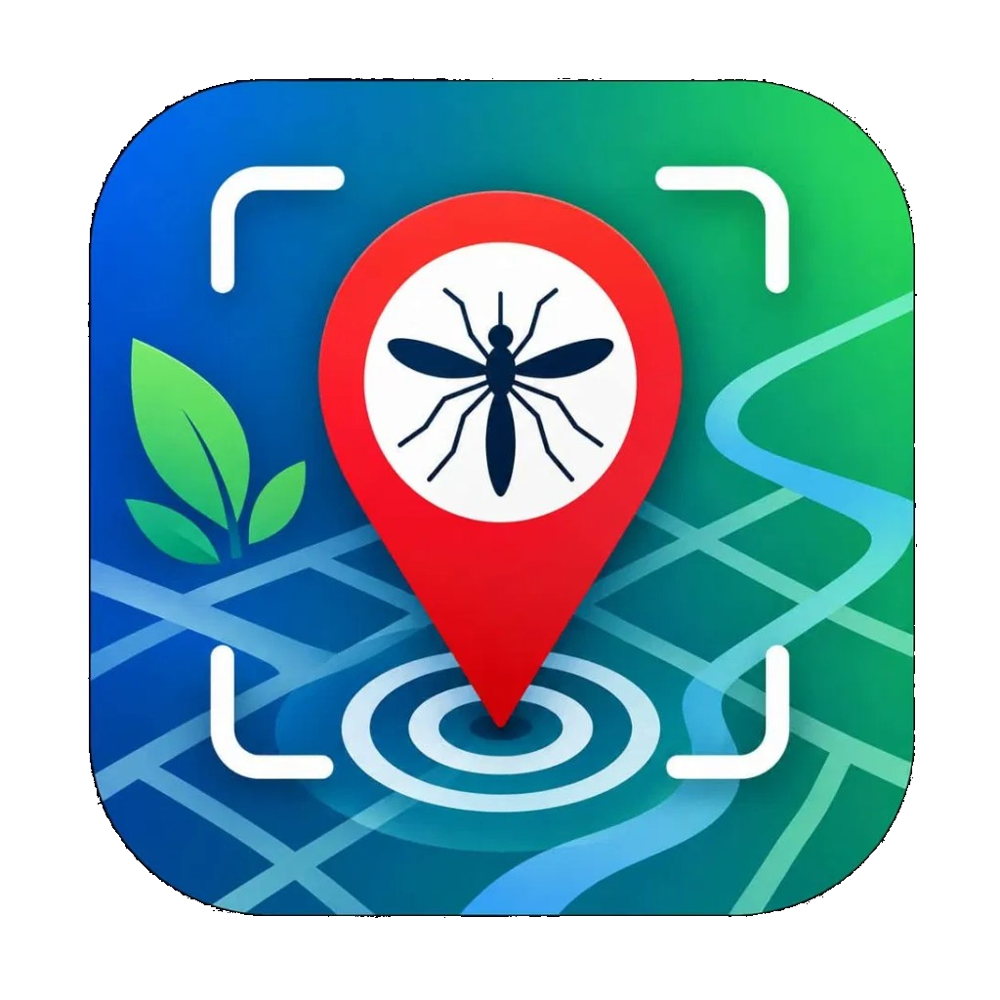
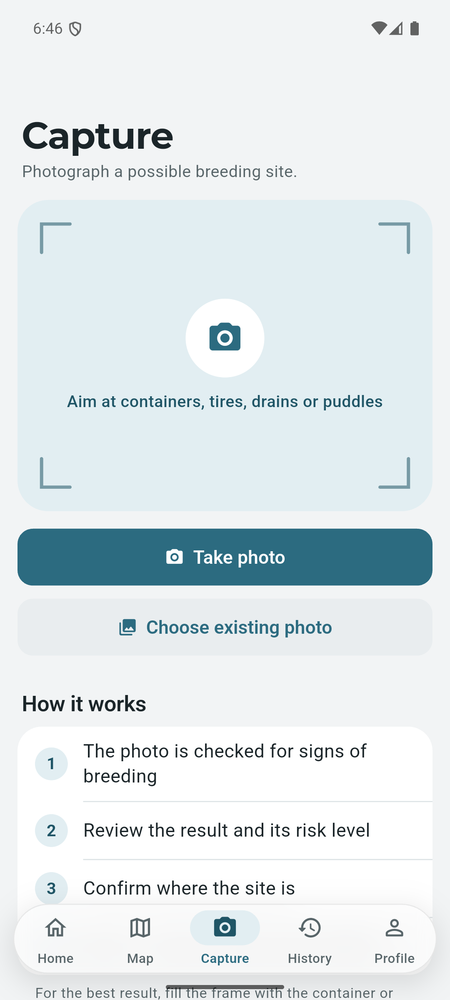
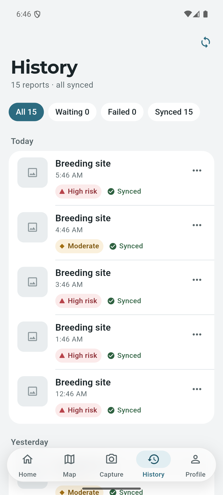
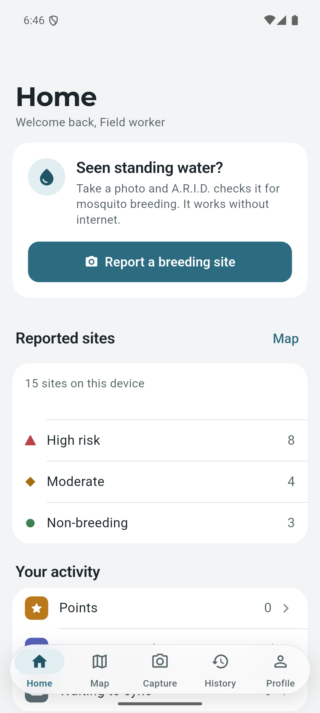

Photograph a possible mosquito breeding site. A.R.I.D. checks it on your phone, marks the spot, and syncs when you're back online.



Aim at containers, tires, drains or puddles.
The photo is checked on the device, with no internet needed.
Reports are saved offline and uploaded when a connection returns.